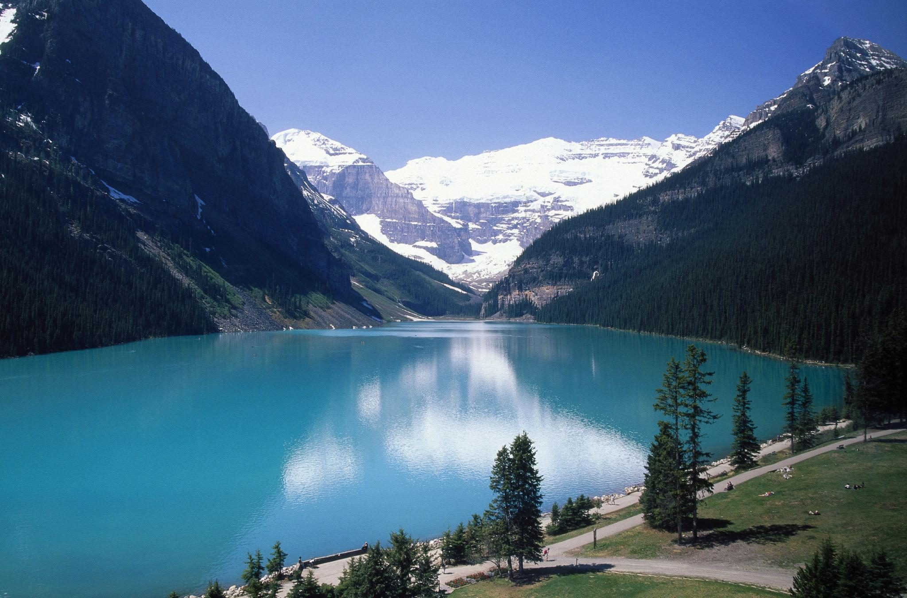

← 트래킹
🏞 레이크 루이스
Lake Louise
⭐ 세계에서 가장 아름다운 에메랄드빛 호수와 다양한 트레킹 코스

📅 우리 일정
Day 3 오후
🥾 코스 선택
Lake Agnes Trail
⭐ 티하우스와 아름다운 호수를 만나는 대표 트레킹
🚶 왕복 7.4km
⏱ 2.5~3시간
💪 보통
Big Beehive
⭐ 레이크 루이스 최고의 전망을 만나는 인기 코스
🚶 왕복 10.3km
⏱ 3.5~4.5시간
💪 보통~어려움
Plain of Six Glaciers
⭐ 빙하를 가장 가까이에서 만나는 감동적인 트레킹
🚶 왕복 13.8km
⏱ 4.5~5.5시간
💪 어려움
Lakeshore Trail
⭐ 누구나 부담 없이 즐기는 호숫가 산책
🚶 왕복 4km
⏱ 45~60분
💪 매우 쉬움
📍 Google Maps
← 트래킹